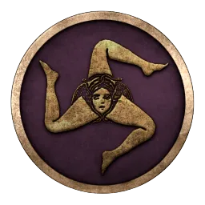
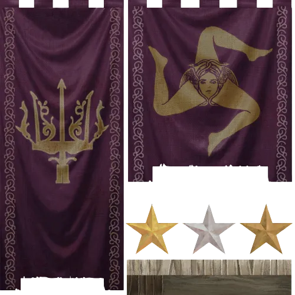
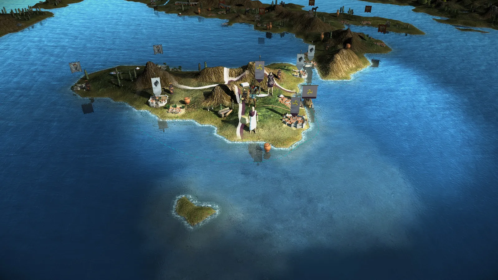
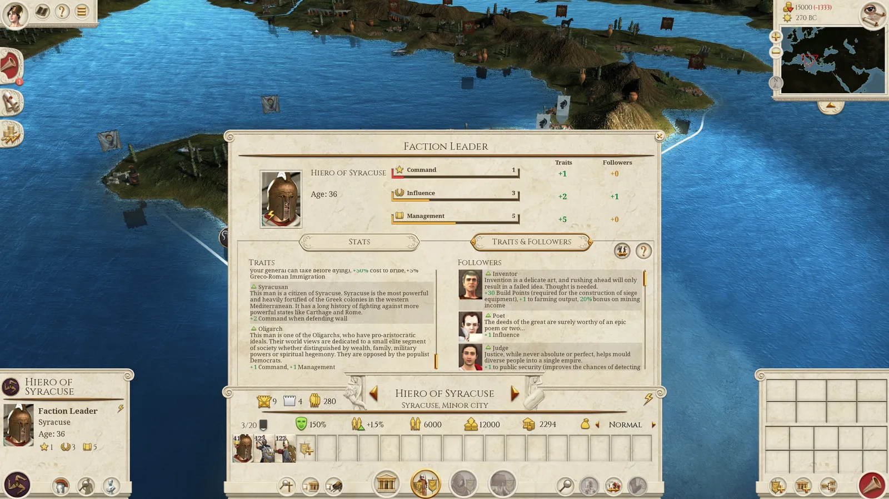

RTR: Imperium Surrectum
RTR: Imperium SurrectumSyracuse
2022-02-08 · Tarnholm
STRANGER
[87]“Oh dear, oh dear, ladies! Do stop that eternal cooing. (to the bystanders) They’ll weary me to death with their ah-ah-ah-ing.”
PRAXINOA
[89]“My word! where does that person come from? What business is it of yours if we do coo? Buy your slaves before you order them about, pray. You’re giving your orders to Syracusans. If you must know, we’re Corinthians by extraction, like Bellerophon himself. What we talk’s Peloponnesian. I suppose Dorians may speak Doric, mayn’t they? Persephone! Let's have no more masters than the one we’ve got. I shall do just as I like. Pray don’t waste your breath.”
– Theokritos, Idylls XV, 87-95 on two Syracusan women in Alexandria, early 3rd century BC.
It was a tragedy, some said. It was a scandal and brutal murder, others shouted. It was pure love, said the rest. Whatever it was: Archias, son of Anaxidotos, had to leave Corinth. Love may have led him, but when he and his friends fought over the young and handsome Akteion with the family of the boy, Archias’ loved one was torn into two. His father Melissos soon found voluntary death, too, and the wise Pythia sent Archias to the West, telling him to take all of his followers with him on his travel into the unknown. Archias’ exile was the only way to save mother Corinth from the wrath of Poseidon, and besting the waves Archias led his men to the shores of Sicily. There he found the fountain, Arethusa himself, victim of another crime. The beautiful nymph was stalked by the river god Alpheios, and fleeing through the water, she followed the current underneath the inner sea to travel from Olympia to Sicily. On the peninsula called Ortygia, Archias’ men erected a temple for Apollo who had guided them to their new home, and founded the city of Syracuse.
In Syracuse, Archias fell in love with another youth, Telephos, but years later he was murdered by the very same Telephos. Only the Gods know why our city was built on such violence, on anger, uncontrolled passion and envy. We are but men, and we have the faults of mortals. Violence has shaped our history, and though it brought us pain, it also brought glory: did not Dionysios the first of his name bring down the great city of Rhegion, did he not destroy the Carthaginians and rule over Italy? For his ships sailed to the mouth of the Adriatic, planting colonies in the lands of the Barbarians, and his mercenaries burned the city of Rome, which is now grand and mighty. Maybe he was cruel, maybe he was a tyrant, but he was a proud Syracusan, and the most powerful man in the Greek world!
Before him was Gelon, and as Herodotus tells us, he commanded a huge army and a huge fleet and could easily have saved Hellas from the Medes, but in vain they rejected him. He, too, slaughtered the Carthaginians, and it was him who built our temples and the grand walls and fortresses that no mortal foe can overcome. His brother, Hieron, succeeded him, and from far and wide the poets and actors and singers came to his court, among them the famous Pindar the Boiotian himself, who praised his ruler in many a fine line. The years passed and our ancestors crushed the Barbarians in the centre of this island under their vile leader Duketios. Zeus smiled upon us, but his wife Hera, blinded by greed and grudges against her brother-husband, sent the scheming Athenians to attack us and ravage our lands. Yet Hermokrates kindled a fire in his citizens, and they fought like the heroes of the Trojan war in our defence against the invaders. We Syracusans triumphed once more, we proud Corinthians and proper sons of the Peloponnese.
Hera was not to be denied so easily, and three generations after Gelon’s victory at Himera, the bloodthirsty Phoenicians returned to our lands, destroying many a Greek city and encircling our beloved Syrakousai itself. If not for the young Dionysios, our proud city might have been lost. Instead, he broke through the blockade and chased the Barbarians away. And though they returned time and again, Dionysios fought off wave after wave, like Arethusa in her struggle against Alpheios. And no one else either, neither Sicels nor Italiots, could stop him. Oh, Athena praise the days when Syracusans, brave sons of Bellerophon, ruled the waves. However, every Hellen knows that the gods will eventually get their ways, and Hera corrupted Dionysios’ son, the younger Dionysios, to make his empire crumble like men crumble in the quarries. Chaos followed, rivers of blood and innumerable murder, until the saviour Timoleon arrived from mother Corinth, re-founding Sicily and bringing things to order once again.
This was not the end of the story: Agathokles followed Dionysios, and when our city was hard pressed by the insatiable Carthaginians once more, he sailed to Africa to take on the enemy in his own land. Agathokles ruled with an iron fist and reminded both the Barbarians and the Italiotic Hellenes of the former might of Syracuse. When he was treacherously murdered, foreign invaders threatened again, so we summoned Pyrrhos, likeness of the divine Alexander, to our help. Now, Sicily is a battlefield once more: a perfidious and despicable group of Barbarians from Campania has seized old Zankle, Messana, to our North, and they are a threat to our peace and security and to that of our allies. The Romans stand across the strait, besieging our old foe Rhegion, which is in the hands of another group of rogue mercenaries. To the West, the Carthaginians are once more casting covetous eyes on our grand and wealthy city and the other Sikeliote towns.
We are Syracusans. We are the proud offspring of Bellerophon, oh yes Corinthians we are, Peloponnesians and Dorians. We are the best of the Greeks, not as feeble as the Athenians, not as dumb as the Boiotians, not as impenitent as the Lakedaimonians, nor as stinky as those Achaians and certainly no sheepshaggers like those Epirotes, Macedonians and Aitolians all. Apollo has chosen us, we are destined to lead. Now is the time to act. Our ancient foes need to be reminded of their true masters. We will crush them and force them into the dust, filling the rivers of Hellas Megas with their blood. Syracuse shall rule the waves and rule the lands, and this time we will finish the job. We, the sons of Dionysios, are coming for them.
Welcome to yet another Developer Diary! Today we are showing off another new faction that we are adding to RIS 0.4.0, Syracuse!
Syracuse finds itself in a dangerous position. With the new power of Rome to the North, its ancient foe Carthage to the West and with rogue mercenaries running riot in Messana and Rhegion, there are plenty of threats around. But maybe this grave situation can become an opportunity for expansion. Will you strike first and terrorise your enemies? Will you crush your Carthaginian rivals and finally expell them from Sicily? You can choose to go down the historical route and ally yourself with Rome as Hieron II did, or you can try and emulate Dionysios I and Agathokles in expanding into Italy. The choice is yours, and with formidable cavalry and a diverse selection of mercenaries, Syracuse shall rule the battlefields!


Syracuse starts with just a single city, but what a city it is! The city of Syracuse is the crown jewel of Sicily and both Carthage and Rome look at it with envy. As Syracuse you will have to defend yourself against these mighty powers. Will you play them against each other or will you take your rightful land through raw Greek military power alone?

Known for its masterful defence Syracuse gets additional bonuses when besieged.

We know many of you will find Syracuse an excellent addition to our map making the war for Sicily yet more a struggle for the powers involved!
This was all we had to show for this time, but rest assure more is on its way as we come ever closer to our next release.